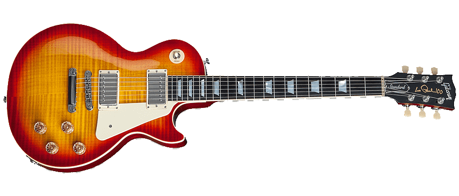
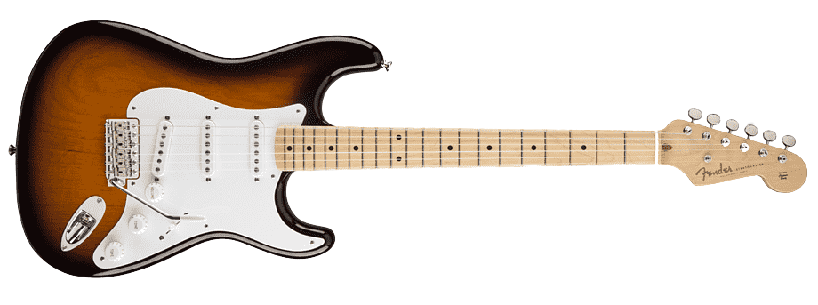
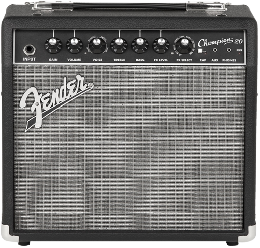

Fender Telecaster
Перша цілокорпусна гітара від компанії Fender. Має два сінглових звукознімачі, мензура гітари
25.5" (648mm), кріплення грифу на болтах. Telecaster відомий своєю здатністю виробляти яскравий,
багатий тон або теплий, блюзовий тон, в залежності від обраного звукознімача - «брідж» (bridge
(англ.) - нижній поріжок - біля нижнього поріжка) або «нек» (neck (англ.) - гітарний гриф - біля
грифу). Звукознімач на позиції «брідж» має більш «хвилястий» звук, ніж звукознімач на позиції
«нек», отже він утворює сильніший сигнал на виході, який компенсується за рахунок меншої
індуктивності датчика в цій позиції.

Gibson Les Paul
Також культова гітара, головний конкурент компанії Fender.
Les Paul винайшли, щоб зробити звук гітари голоснішим і чіткішим, але при збільшенні потужності
лампового підсилювача вийшов зовсім інший звук. Лес пол люблять за м'ясистий звук який підходить
для року та більш важких жанрів в музиці по типу металла. Гітара має два звукознімача типу
Хамбакер, 22 лади, бридж типу tune-o-matic з stop bar, мензура 24.75" (629mm), тип грифу
вклеїний (в деяких моделях тип на болтах.). Ця гітара є однієї з найпопулярніших на ринку гітар.
Fender Stratocaster
Fender Stratocaster (або Strat ) - модель електрогітари , розробленої Джорджем Фуллертоном ,
Лео Фендером і Фредді Таваресом в 1954 році і що випускається аж до теперішнього часу.
Stratocaster використовувався багатьма гітаристами, тому її можна почути на багатьох
історичних записах. Поряд з Gibson Les Paul , Gibson SG і Fender Telecaster є однією з
найвідоміших і найпоширеніших моделей електрогітар у світі. Великою мірою популярність
Fender Stratocaster пояснюється його універсальністю. Бриджевий, середній та певний («ритм»,
«нормальний тембр» і «соло» відповідно) датчики забезпечували широкий діапазон звучань.
Стандартні датчики видавали яскравий і чистий звук, багатий на гармоніки.

Що таке Комбо-підсилювач?
Комбопідсилювач (або «комбік») — пристрій, що складається з попереднього підсилювача («преамп»),
тембр-блоку, блоку ефектів, блоку обробки звуку, підсилювача потужності, акустичної системи і панелі
управління, що знаходяться в одному корпусі. За принципом роботи комбопідсилювачі поділяються на
аналогові і цифрові. До аналогових відносять лампові гітарні підсилювачі, транзисторні, а також
гібридні підсилюва
Fender Champion 20
це транзисторний комбопідсилювач для дому з набором цифрових ефектів. Завдяки грамотному
поєднанню цифри та транзисторних схем, на виході виходить універсальний комбопідсилювач. З
огляду на можливості налаштувань і варіанти звучання, він підійде як новачкам, так і професійним
музикантам для практики в домашніх умовах.
Головною перевагою цього комбопідсилювача для електрогітари є ручка Voice, яка дозволяє
налаштувати декілька варіантів гітарних звуків: Tweed, Blackface, British і Metal. Погравши
якийсь час з еквалайзером, рівнем гейну та ручкою Voice, ви знайдете безліч варіантів звучання
для будь-якого музичного стилю.
